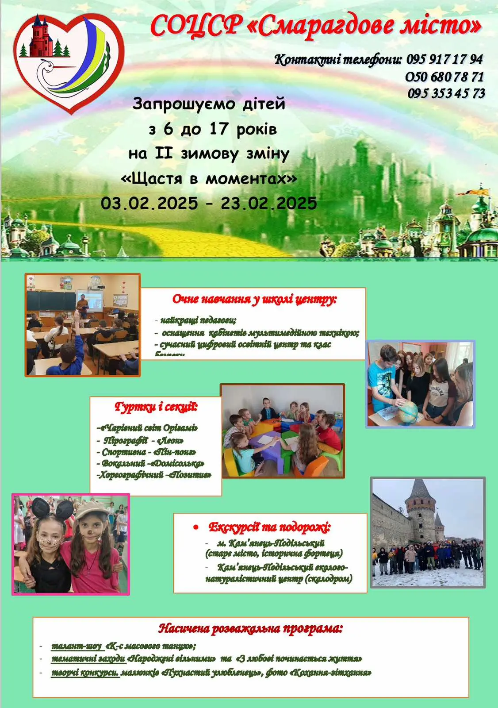

Заклад загальної середньої освіти
І-ІІІ ступенів № 9
Торецької міської
військово-цивільної адміністрації
Бахмутського району Донецької області
СОЦСР «Смарагдове місто»
#ЗЗСО_9 #оздоровлення #оголошення
СОЦСР «Смарагдове місто», що релоковано до с.Оринин Кам’янець-Подільського району Хмельницької області запрошує усіх бажаючих на VІ тематичну зміну «Квіткова вишиванка» (з 02 травня по 22 травня 2025 року). Інформацію про роботу СОЦСР «Смарагдове місто», яку можна дізнатися на
офіційній Facebook сторінці .
СОЦСР «Смарагдове місто»
#ЗЗСО_9 #оздоровлення #оголошення
СОЦСР «Смарагдове місто» запрошує всіх бажаючих на V тематичну зміну «Серцю милий рідний край»,яка відбудеться з 10 квітня по 30 квітня 2025 року🏕️⛺️
Інформацію про роботу СОЦСР «Смарагдове місто» можна дізнатися на
офіційній Facebook сторінці .
Оздоровлення та відпочинок у «Міжнародному дитячому центрі «Артек»»
#Освіта_Торецька #длябатьків #оголошення
‼️ДО УВАГИ‼️
Інформація щодо планування потреби в оздоровленні та відпочинку дітей Торецької міської територіальної громади у 2025 році в дитячому оздоровчому таборі державного підприємства «Міжнародний дитячий центр «Артек».
Шановні батьки, просимо прийняти участь у онлайн опитувані з метою формування потреби щодо оздоровлення та відпочинку Ваших дітей в ДПУ «МДЦ «Артек» за місцем розташування: м. Київ, Пуща-Водиця, 14-лінія та Закарпатська обл.., Хустовський район, с. Березники в поточному році.
Пріоритетне право на путівку та першочергове включення до потреби на розподіл путівок мають діти, які потребують особливої соціальної уваги та підтримки та належать до категорій:
➢ діти-сироти, діти, позбавлені батьківського піклування;
➢ діти осіб, визнаних учасниками бойових дій відповідно до пунктів 19–24 частини першої статті 6 Закону України “Про статус ветеранів війни, гарантії їх соціального захисту”;
➢ діти, один із батьків яких загинув (пропав безвісти).
Оздоровлення та відпочинок дітей
#Освіта_Торецька #длябатьків #оголошення
‼️ДО УВАГИ‼️
Інформуємо про початок прийому заяв на отримання послуг з оздоровлення та відпочинку дітей у 2025 році❗️
Управління соціального захисту населення Торецької міської військової адміністрації Бахмутського району Донецької області (далі – Управління) повідомляє, що з26березня 2025 року починаєтьсяприйом заяв, разом із необхідними документами, для постановки на облік щодо забезпечення послугами оздоровлення та відпочинку дітей, які потребують особливої соціальної уваги та підтримки, та які зареєстровані/задекларовані на території Торецької міської територіальної громади і перемістились (евакуювались) за її межі (далі – діти, які потребують особливої соціальної уваги та підтримки)у 2025 році.
Вікова категорія дітей: від 7 до 17 років (включно)
До пільгових категорій дітей відносяться:
• діти-сироти, діти, позбавлені батьківського піклування;
• діти осіб, визнаних учасниками бойових дій відповідно до пунктів 19-24 частини першої статті 6 Закону України "Про статус ветеранів".
СОЦСР «Смарагдове місто» запрошує дітей на ІІІ тематичну зміну
#Освіта_Торецька #ЗЗСО_9 #оголошення
СОЦСР «Смарагдове місто» запрошує дітей на ІІІ тематичну зміну «Big Game» з 25 лютого по 17 березня 2025 року👫👭
За більш детальною інформацією,звертайтесь за телефоном📞👇👇👇
Практичний путівник «Як допомогти рідним подолати ігрову залежність»
#Освіта_Торецька #ЗЗСО_9 #оголошення
ДО УВАГИ‼️‼️‼️
Комісія з регулювання азартних ігор та лотерей розробила практичний путівник «Як допомогти рідним подолати ігрову залежність»
107-ма річниця бою під Крутами
#Освіта_Торецька #ЗЗСО_9
Сьогодні Україна вшановує 107-му річницю бою під Крутами. Цей день присвячений пам'яті українських студентів, які в 1918 році ціною власного життя зупинили більшовицький наступ на Київ. З цієї нагоди в нашому закладі було проведено історичну відеогодину «Герої Крут – оборонці української державності», щоб віддати шану цим відважним героям і згадати важливість їхнього внеску в боротьбу за незалежність України.
День відкриття Антарктиди
#Освіта_Торецька #ЗЗСО_9
28 січня світ відзначає День відкриття Антарктиди У цей день згадуємо про важливі дослідницькі експедиції, які розширили наше розуміння загадкового континенту Учасниками відеоекскурсії сьогодні стали здобувачі нашого закладу, а провела її учасниця 29 - ї Української антарктичної експедиції пані Тетяна Баглай Tanya Baglay . Антарктика досі залишається об'єктом інтенсивних досліджень, сприяючи вивченню клімату, біорізноманіття та екосистем. Тож до нових зустрічей!
Вітаємо дипломантів, учасників віртуальної виставки
#Освіта_Торецька #ЗЗСО_9
Вітаємо дипломантів, учасників віртуальної виставки дитячої творчості "З Україною в серці" , до Дня Гідності та Свободи» на базі освітнього хабу «Аліса в країні знань»
СОЦСР «Смарагдове місто»
Санаторно-оздоровчий центр соціальної реабілітації «Смарагдове місто»,розташований с. Оринин Кам’янець-Подільського району Хмельницької області запрошує усіх бажаючих на ІІ тематичну зміну «Щастя в моментах» (з 03 лютого по 23 лютого 2025 року)
Всеукраїнський місячник шкільної бібліотеки
З 1 по 31 жовтня наш заклад долучається до проведення Всеукраїнського місячника шкільної бібліотеки «Читаюча шкільна родина - стратегічне завдання бібліотеки!»
Медична допомога для внутрішньо переміщених осіб
Національна служба здоров’я України у продовження комунікаційної кампанії щодо підвищення обізнаності внутрішньо переміщених осіб щодо їхніх прав в отримані медичної допомоги в рамках програми державних гарантій медичного обслуговування населення інформує..👩⚕️🧑⚕️🏥
День знань
Вакцинація проти дифтерії, правця та кашлюку

Добрий день, шановні колеги! 01.07.2024 року розпочато додатковий раунд з вакцинації дітей та ревакцинації дорослих проти дифтерії, правця та кашлюку, який триватиме до кінця 2024 року. З урахуванням цього, надаємо Вам до відома та використання в роботі посилання на онлайн сервіс – чат-бот з вакцинації https://vaccine.org.ua/chat/, розроблений громадською спілкою «Коаліція за вакцинацію» в рамках проєкту USAID «Розбудова стійкої системи громадського здоров’я». Прохання проінформувати дітей та батьків